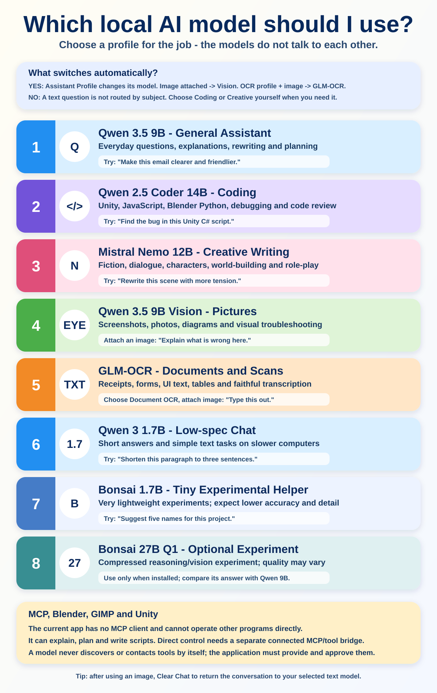

Mellish Portable AI Assistant
A simple guide to choosing models, using images and voice, and understanding what is automatic.
Quick start
- Run
Start Assistant.batand wait for Ollama: ready. - Choose an Assistant Profile for the type of work.
- Type a message and press Send, or use
Ctrl+Enter. - Use Attach Image for screenshots, photos or scanned documents.
- Use Stop / Interrupt to stop generation, speech or recording.
Does it switch models automatically?
Yes, in these cases
- Choosing a named Assistant Profile selects its paired model.
- Any image routes the conversation to Qwen Vision.
- Document OCR plus an image routes to GLM-OCR.
- Project Knowledge uses BGE-M3 behind the scenes.
No, in these cases
- A text question is not classified as coding or creative automatically.
- Models do not communicate with or delegate to one another.
- A model does not discover MCP tools by itself.
Important: after an image has been used, that chat continues on the image model because the image remains in its history. Use Clear Chat to return to the selected text model.
Profiles and system prompts
A profile selects a model, system prompt and recommended settings together. Edited system prompts are remembered separately for each profile, so changing profiles does not erase another profile's prompt. Use Custom for a manual model-and-prompt combination.
Images, voice and local knowledge
- Images: attach files below 25 MB for analysis or OCR. This package does not include image generation.
- Speech-to-text: hold the microphone button, speak and release. Auto-send is optional.
- Text-to-speech: enable reply reading, then choose a voice and speed.
- Project Knowledge: index a local folder, enable it, and relevant excerpts will be supplied to the active chat model. It does not edit files.
MCP and application control: the current app has no MCP client or general tool runner. It can advise and write scripts, but it cannot directly control Blender, GIMP or Unity. That requires a separately connected MCP server, a client/tool layer in this app, permissions, and explicit action handling. Qwen Coder would be the first model to test for programming tools; Vision helps only when screenshots are involved.
Useful controls
- Temperature: lower is steadier; higher is more varied.
- Context: larger values remember more but use more memory.
- No Think: asks Qwen for a shorter direct response.
- Save/Load Chat: keeps conversations under the portable installation folder.
- Repair or Add Models: repairs the same installation or downloads another model.

For the complete text version, open docs/USER_GUIDE.md. Hardware drivers, Windows microphone permission and audio-device selection remain specific to each computer.